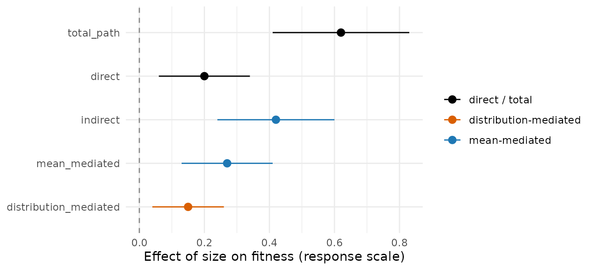

The picture no other SEM package draws
Every structural equation modelling tool will draw you a path
diagram. None of them will draw you this: a forest plot that
splits the total effect of a predictor into the part that travels
through mediator means and the part that travels
through mediator spread, zeros, or shape. That second
channel – the distribution-mediated effect – is the
reason drmSEM exists, and it is the figure below.

The orange distribution_mediated interval sits well
clear of zero. It says that a non-trivial part of how size
reaches fitness flows through the variability and
zero-structure of an intermediate count – not through any mean.
A mean-only SEM reports that channel as zero, or silently folds it into
the mean. drmSEM isolates it and labels it.
The three effect types
drmSEM distinguishes three ways a predictor
X can reach a target node Y. The equations
below (from docs/design/02-effect-calculus.md) name the
exact component path each one travels.
Direct.
X -> mu(Y). The controlled direct effect: hold every mediator at its observed value and move onlyX, so just the arrows running directly into the mean ofYoperate.Mean-mediated.
X -> mu(M1) -> mu(M2) -> mu(Y). The classical indirect path:Xshifts the mean of a mediator, which shifts the mean of the next, on down to the mean ofY.Distribution-mediated.
X -> sigma(M2) -> distribution(M2) -> mu(Y). An indirect path that flows through a mediator’s scale (sigma), zero-inflation (zi), or shape (nu) rather than its mean.Xchanges how spread out (or how zero-inflated, or how skewed) the mediator is; that altered distribution, pushed through a downstream nonlinearity, moves the mean ofY. This effect is exactly zero under mean mediation and appears only when realized mediator draws propagate.
That third type is the novel one. It has no analogue in any coefficient-product mediation formula, because there is no coefficient to multiply: the signal lives in a distributional parameter, and it only becomes a mean effect after passing through a nonlinear link downstream.
Why coefficient products are invalid here
The textbook mediation identity “indirect = product of path
coefficients” is exact only on a single linear, identity-link
scale. A drmSEM path routinely breaks both
conditions:
It crosses links. A
log-link Poisson mean can feed alogit-link binomial mean downstream. Multiplying a coefficient defined on the log scale by one defined on the logit scale produces a number with no response-scale meaning.It crosses distributional components. A
temp -> sigma(size)coefficient describes residual spread, not the mean. There is no valid arithmetic that multiplies a spread coefficient by a downstream mean coefficient to get a mean effect.
So drmSEM does not multiply coefficients. It
simulates the intervention: set the predictor to two
contrasting values (a one-SD contrast for numerics, the first two levels
for factors), push each contrast through the whole fitted DAG with
random effects held at zero, and read off the population-average change
in the response-scale mean of the target. The distribution-mediated
effect is only expressible at all under this simulation view –
it has no coefficient-product counterpart to compare against.
The five-number decomposition
indirect_effects() returns five rows, one per
quantity. Each is a contrast of population-average response
means between the high and low intervention.
quantity |
meaning |
|---|---|
total_path |
the full simulated effect with mediators active and passing realized draws |
direct |
the controlled direct effect (mediators held inactive) |
indirect |
total_path - direct |
mean_mediated |
(mean-mediated total) - direct: the part carried by
mediator means
|
distribution_mediated |
(distribution total) - (mean total): the extra
part flowing through mediator sigma / zi /
nu
|
The identity to keep in mind is
indirect ~= mean_mediated + distribution_mediatedReading the headline forest plot top to bottom:
total_path is everything; direct is the slice
that bypasses the mediators; indirect is what is left once
the direct slice is removed; and that indirect slice splits into the
blue mean_mediated part and the orange
distribution_mediated part. When the orange interval
excludes zero, you have evidence that the predictor acts on a mediator’s
distribution shape, not just its location.
The canonical example: size -> abundance -> fitness
The data-generating process behind the headline figure (see the
drmSEM introductory vignette and
tests/testthat/helper-dgp.R for the full version) is an
ecological chain where size reaches fitness
through an intermediate count, abundance. Crucially,
size is wired into a non-mean component of
abundance: it inflates the spread /
zero-structure of the count, not only its mean. That is what
populates the distribution-mediated row.
The model is built and queried exactly as below. These chunks call the engine on a real fit, so they are shown but not run here.
# size -> abundance (count): size acts on BOTH the NB mean and its
# dispersion/zero-inflation, so it has a distributional channel.
# abundance -> fitness (proportion alive out of trials).
sem <- drm_sem(
abundance = drm_node(
drmTMB::bf(abundance ~ size + temp, zi ~ size), # size -> zi(abundance)
family = drmTMB::nbinom2()
),
fitness = drm_node(
drmTMB::bf(cbind(alive, dead) ~ abundance + size),
family = drmTMB::beta_binomial()
),
data = dat
)paths() shows the component-labelled coefficients; note
the size path into abundance appears once on
mu and once on zi – two different claims.
paths(sem)The controlled direct effect moves only size and lets
nothing mediate:
direct_effects(sem, from = "size", to = "fitness")The total effect under distribution mediation lets
abundance pass realized draws from its
negative-binomial family, so the spread and zeros it carries are
included:
total_effects(sem, from = "size", to = "fitness", mediation = "distribution")And the full five-number decomposition – the object plotted at the top of this vignette – comes from a single call:
eff <- indirect_effects(sem, from = "size", to = "fitness")
eff # the five quantities as a table
plot(eff) # the forest plotplot() on the returned drm_effect draws the
same forest plot rendered above: black for direct / total, blue for the
mean-mediated channel, orange for the distribution-mediated channel,
with a dashed reference line at zero.
Emphasis: the distribution-mediated channel
It is worth being explicit about what makes the orange row non-zero.
In this example size enters zi(abundance) –
the probability that a count is a structural zero. Larger
organisms are found in patches that are present-or- absent more sharply,
so size reshapes the zero-structure of
abundance without (necessarily) moving its mean. When those
realized, zero-heavy counts are pushed through the
logit-link survival model, they move mean fitness. That
movement is the distribution-mediated effect.
The same logic applies to any non-mean component:
- a path into
sigma(M)–Xmakes a mediator more or less variable; - a path into
zi(M)orhu(M)–Xchanges the zeros or the hurdle; - a path into
nu(M)–Xchanges a shape parameter (tails / skew).
In each case the effect on Y is real, is zero under mean
mediation, and is reported on its own row, correctly labelled, by
indirect_effects(). No other SEM package plots it – which
is exactly why this vignette opens with the figure that does.
Recap
- Three effect types: direct
(
X -> mu(Y)), mean-mediated (X -> mu(M) -> mu(Y)), and distribution-mediated (X -> sigma(M) -> distribution(M) -> mu(Y)). - Effects are simulation-based, never coefficient products, because paths cross links and distributional components.
-
indirect_effects()returns a five-number decomposition; thedistribution_mediatedrow isolates the channel no coefficient-product method can express. -
plot()on the result is the marquee figure: a forest plot that makes the distributional channel visible.
For the full three-node worked system, d-separation, and Fisher’s C,
see the drmSEM introductory vignette.